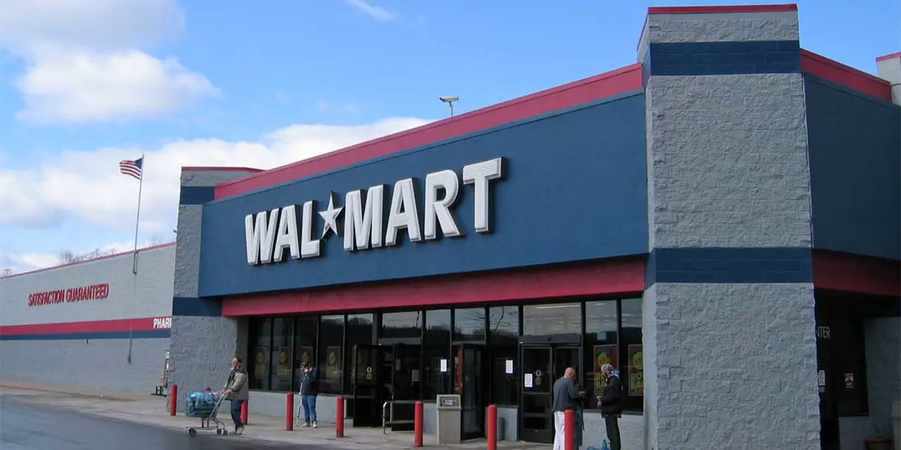

월마트를 전통 유통주로만 보면 핵심을 놓칩니다. 매장 안의 장바구니는 낮은 마진을 만들지만, 그 장바구니가 남기는 데이터와 반복 방문은 높은 마진 사업의 원료가 됩니다. 월마트의 새로운 질문은 “얼마나 많이 팔았습니까”가 아니라 “그 고객 흐름을 광고, 멤버십, 이커머스 효율로 얼마나 바꿨습니까”입니다.
식료품은 월마트의 방어력입니다. 소비자가 지출을 줄여도 식료품과 생활필수품은 계속 삽니다. 하지만 식료품만으로는 높은 주가 배수를 설명하기 어렵습니다. 시장이 기대하는 것은 광고 플랫폼, Walmart+, 샘스클럽, 마켓플레이스, 배송 자동화가 합쳐지며 영업이익률이 조금씩 올라가는 그림입니다.
월마트의 FY2026 1분기 실적은 이 전환이 왜 중요한지 보여줍니다. 매장 매출이 안정적으로 유지되는 가운데 이커머스와 광고가 더 높은 성장률을 보이면, 월마트는 단순 할인점이 아니라 소비 데이터 플랫폼으로 평가받을 여지가 생깁니다.
장바구니는 낮은 마진이지만 데이터는 높은 마진입니다

유통업은 작은 숫자의 싸움입니다. 영업마진이 0.5%포인트만 움직여도 이익은 크게 달라집니다. 월마트가 광고와 멤버십을 강조하는 이유도 여기에 있습니다. 물건을 싸게 팔아 고객을 모으고, 그 고객 흐름을 더 높은 마진의 사업으로 연결해야 합니다.
광고 사업은 매장 진열대의 디지털 버전입니다. 브랜드는 월마트 고객이 실제로 무엇을 사는지 알고 싶어 합니다. 검색 광고, 추천 상품, 매장 내 미디어, 온라인 마켓플레이스 광고는 모두 구매 직전의 데이터를 활용합니다. 이 광고는 상품 판매보다 마진이 높습니다.
멤버십도 마찬가지입니다. Walmart+가 단순 무료배송 혜택에서 끝나면 비용 부담이 됩니다. 그러나 반복 구매, 배송 밀도, 광고 타깃팅, 금융·헬스케어 서비스 연결로 이어지면 고객당 가치가 올라갑니다. 월마트가 장기적으로 보여줘야 할 것은 가입자 수가 아니라 멤버십 고객의 구매 빈도와 유지율입니다.
코스트코와 아마존 사이에 월마트의 자리가 있습니다
관련 영상
Walmart FY2026 Q1 Earnings Release
코스트코는 회비 수입과 높은 갱신율로 유통업의 다른 답을 보여줍니다. 아마존은 프라임, 광고, 클라우드, 마켓플레이스를 묶어 고객 시간을 장악했습니다. 월마트는 이 둘 사이에 있습니다. 코스트코처럼 식료품과 회원 기반이 있고, 아마존처럼 온라인 광고와 마켓플레이스를 키우고 있습니다.
타겟은 월마트와 비슷한 소비자 지출을 보지만 일반상품 비중이 높아 경기 민감도가 더 큽니다. 소비자가 옷과 가정용품을 줄이면 타겟은 더 먼저 흔들릴 수 있습니다. 월마트는 식료품 비중이 높아 방어력이 강하지만, 그만큼 상품 마진은 낮습니다. 그래서 광고와 멤버십이 더 중요합니다.
투자자는 월마트를 방어주와 플랫폼주 사이에서 봐야 합니다. 경기가 나쁠 때는 저가 식료품과 필수품 매출이 버팀목입니다. 경기가 좋아질 때는 일반상품 회복과 광고 수요가 이익률을 밀어 올릴 수 있습니다. 이 이중성이 월마트의 장점입니다.
배송 효율은 매출보다 천천히 이익으로 들어옵니다
월마트의 이커머스는 매출만 보면 좋아 보이지만 배송 비용을 함께 봐야 합니다. 온라인 주문이 늘어도 물류비와 인건비가 더 빨리 늘면 이익은 남지 않습니다. 그래서 중요한 것은 매장 픽업, 라스트마일 배송 밀도, 자동화 창고, 재고 배치입니다.
월마트는 매장을 배송 거점으로 활용할 수 있습니다. 이 장점은 아마존과 다른 방식의 물류 네트워크를 만듭니다. 고객과 가까운 매장이 많으면 식료품 배송과 픽업의 비용을 낮출 수 있습니다. 다만 매장이 많다는 것은 인건비와 운영비도 크다는 뜻입니다. 자동화와 주문 밀도가 비용 절감으로 이어져야 합니다.
광고와 멤버십이 아무리 좋아도 물류 손실이 커지면 전체 마진은 제한됩니다. 주주가 확인해야 할 것은 이커머스 매출 성장률보다 온라인 주문의 손익 개선입니다. 배송 한 건당 비용이 줄고, 같은 고객이 더 자주 구매하며, 광고 매출이 붙을 때 비로소 온라인 성장은 이익 성장으로 바뀝니다.
월마트의 숫자는 작은 폭으로 크게 움직입니다
WMT의 좋은 시나리오는 식료품 매출이 안정적이고, 일반상품이 회복되며, 광고와 멤버십이 영업마진을 조금씩 올리는 경우입니다. 이때 월마트는 방어주이면서도 디지털 유통 플랫폼으로 재평가될 수 있습니다.
나쁜 시나리오는 임금과 물류비가 오르고, 소비자가 일반상품을 줄이며, 온라인 배송 비용이 광고 이익을 상쇄하는 경우입니다. 매출은 안정적이어도 이익률이 정체되면 높은 기대를 유지하기 어렵습니다.
따라서 월마트를 볼 때는 동일매장 매출, 광고 매출 성장률, 멤버십 유지율, 이커머스 손익, 재고 회전, 임금 비용을 함께 봐야 합니다. 월마트의 투자 포인트는 화려한 신사업이 아니라 낮은 마진 사업에서 높은 마진 층을 조용히 쌓는 능력입니다.
월마트의 광고 사업은 매장 트래픽이 있기 때문에 가능합니다. 고객이 실제로 구매하는 순간에 가까운 데이터를 갖고 있다는 점은 일반 미디어 광고와 다릅니다. 브랜드 입장에서는 광고 노출보다 판매 전환을 더 직접적으로 확인할 수 있습니다. 이 차이가 월마트 광고의 가격 결정력을 만듭니다.
샘스클럽도 별도로 봐야 합니다. 회비 기반 창고형 매장은 코스트코와 비슷한 논리로 작동하지만, 월마트 전체 생태계와 연결될 때 의미가 커집니다. 회원 데이터, 대량 구매, 소상공인 고객, 광고 판매가 맞물리면 샘스클럽은 단순 매장 수보다 더 큰 수익성을 만들 수 있습니다.
월마트의 위험은 저가 경쟁이 끝나지 않는다는 점입니다. 소비자가 가격에 민감할수록 매장 트래픽은 늘 수 있지만, 상품 마진은 제한됩니다. 회사가 가격 이미지를 지키면서도 광고와 멤버십으로 이익률을 올려야 하는 이유입니다. 싸게 파는 능력과 많이 남기는 능력은 서로 충돌할 수 있습니다.
일반상품 회복도 중요한 변수입니다. 식료품은 방문 빈도를 만들지만 마진은 낮습니다. 의류, 가정용품, 전자제품 같은 일반상품이 회복되어야 상품 믹스가 좋아집니다. 소비가 둔화되어 일반상품이 약하면 광고와 멤버십이 일부 보완하더라도 전체 이익률 개선은 느려집니다.
그래서 월마트를 볼 때는 방어주라는 단어에 안주하면 안 됩니다. 식료품 점유율, 일반상품 회복, 광고 매출, 멤버십 유지율, 온라인 주문 손익, 임금과 물류비가 모두 같은 방향이어야 합니다. 이 회사의 진짜 변화는 매장 수가 아니라 고객 데이터가 더 높은 마진으로 바뀌는 속도입니다.